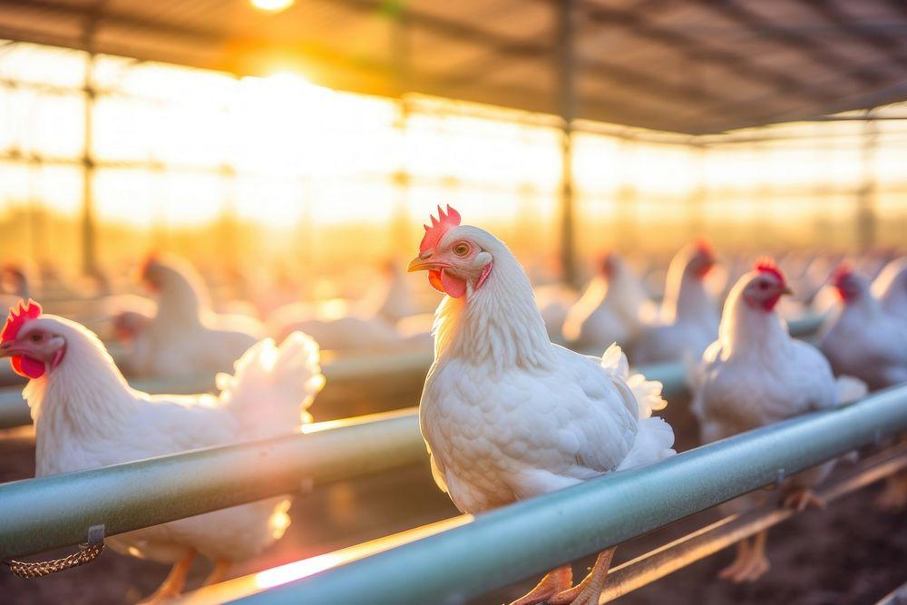
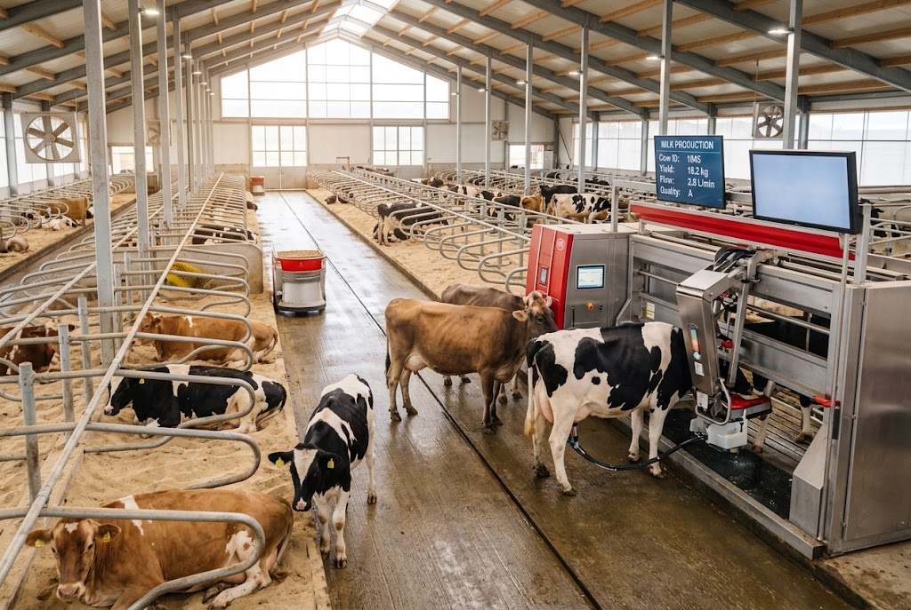

Poultry Management
The Importance of Good Poultry Management
Discover how housing, nutrition, hygiene, and biosecurity contribute to poultry health and flock management.
Ask Us a QuestionStories, Knowledge & Updates
Explore our farming updates and practical information about poultry management, cattle health, and responsible dairy farming.
Explore Our Articles

Poultry Management
Discover how housing, nutrition, hygiene, and biosecurity contribute to poultry health and flock management.
Ask Us a Question
Cattle Health
Learn why observing cattle, maintaining good hygiene, and seeking timely veterinary advice are important.
Ask Us a Question
Dairy Farming
Explore the role of cattle nutrition, clean milking practices, animal welfare, and farm hygiene.
Ask Us a QuestionContact us with your questions about our farming activities, products, or veterinary expertise.
Contact Us